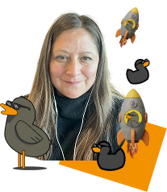

01 / INNOVACIÓN
Sincronización local-first
Trabajo en clase y en casa con conexión intermitente, sin perder un cuadro.
Convertimos las tablets y celulares del colegio en estaciones de animación cuadro a cuadro: seguras, sin internet y pensadas para un curso completo.
Funciona mejor en un teléfono o tablet Android con Chrome · Prototipo v0.1.0
Redes sociales, videojuegos e IA generativa comparten una lógica: la recompensa llega primero. Ese patrón condiciona a la gratificación instantánea y forma generaciones menos dispuestas a concentrarse, a profundizar, a sumergirse en una idea y a explorar con paciencia el proceso.
En una sociedad de la inmediatez —donde la velocidad parece una virtud— ganamos rapidez, pero perdemos territorio cognitivo: la capacidad de sostener la atención y de involucrarse de verdad con lo que se crea.

«La mayoría de los padres se centran mucho en el tiempo total frente a la pantalla, pero esto se trata más bien de señales de alerta específicas» y de identificar patrones de uso problemático.
— Nagata, investigador del estudio sobre uso adictivo de redes sociales y síntomas de TDAH en adolescentes. La Tercera, julio 2026.
Lectores «apresurados», que responden rápido y mal, casi se duplicaron entre 2018 y 2025 (PISA 2025).
Diarias de pantalla por entretención entre los 8 y 12 años; casi nada de ese tiempo es para crear.
En pensamiento creativo, Chile iguala a la OCDE generando ideas, pero queda bajo justo en evaluar y mejorar lo que crea. Y desde 2026 la Ley 21.801 saca los celulares personales de la sala, pero las apps de creación están hechas para una persona, no para un curso de 30.
del PIB de Chile viene de las industrias creativas.
empleos genera el sector en el país.
«Historia de un Oso» (2016): la animación chilena compite en el mundo.
Chile forma animadores en la universidad, pero no hay herramientas que impulsen la creatividad desde la infancia, dentro del colegio.
Facilitar la enseñanza y experimentación de la animación cuadro a cuadro en contextos educativos, promoviendo el pensamiento creativo, la expresión artística y el uso significativo de la tecnología. Niños y niñas de 8 a 12 años crean solos o en grupo mientras el docente acompaña el proceso de cada uno.
Un entorno limpio, sin distracciones ni compras.
Modo seguro: el foco se queda en crear.
Todo ocurre en el dispositivo, también sin señal.
El docente proyecta un QR y las tablets se unen en segundos.
Modo kiosco: sin salir a otras apps y sin publicidad.
Solos o en equipo, con roles y sin internet.
Docente y UTP ven el avance de cada estudiante.
La cámara y el editor existen en muchas apps. Nosotros construimos lo que falta para que funcionen con 30 niños, en cinco componentes propios.
Trabajo en clase y en casa con conexión intermitente, sin perder un cuadro.
Segura para menores y alineada con la Ley 21.719: apodo, avatar y clave de imágenes.
Fija las tablets desde el celular del docente, sin soporte técnico.
Autoría de cada cuadro, versión y rol, convertida en trazabilidad.
Iteraciones y correcciones convertidas en datos para el docente y la UTP.
No automatizamos la creatividad con IA. Quitamos las barreras técnicas sin quitarle al niño la experiencia de crear.
Con «papel cebolla» y una línea de tiempo fácil de ordenar. Cada cuadro se guarda al instante, también sin internet.
Apodo, avatar y clave de imágenes. Un niño de 8 años entra solo.
Roles que rotan y registro de quién hizo cada cuadro.
Cada intento se guarda para comparar, corregir y mejorar.
Con su código, el niño sigue animando fuera de la clase y cada avance queda registrado como actividad de su proyecto escolar. El docente lo ve en su panel.
Ligado a los objetivos de aprendizaje chilenos.
Modo proyección y exportación en video.

No es una idea: ya lo probamos un año escolar. Un laboratorio real dentro de la sala de clases para validar cómo funciona la animación cuadro a cuadro y sus metodologías y didácticas con niños y niñas: una hora semanal, de abril a noviembre.
El taller no usó nuestra aplicación —todavía en construcción—, pero cada sesión sirvió para depurar el prototipo: entender el flujo real de un curso, los tiempos y los apoyos que necesita un niño de 8 a 12 años.
sesiones de una hora
niños con solo 2 celulares
el interés duplicó lo esperado: lista de espera del doble
recaudados: 15 niños × $25.000 al mes × 8 meses


Durante el taller se usó Stop Motion Studio Pro como herramienta de captura, mientras —a partir de esa misma experiencia— se construía el prototipo de BlackQuack, que tuvo algunas sesiones de uso con niños.
La prueba de concepto no se quedó en la sala: los resultados nos llevaron al FIDA 2026, abrieron una alianza universitaria y despertaron el interés real de nuevos colegios.
colegios nuevos con interés real en probar el prototipo
universidad aliada: U. de Valparaíso (Escuela de Diseño)
compromiso confirmado para una 2ª versión del taller
De la Escuela de Diseño: acceso a infraestructura y laboratorios de stop motion y prototipado, además de estudiantes para testear la app. Nuestra alianza más importante para escalar la validación.
Los estudiantes mostraron sus animaciones ante el público del festival.
Colegio Montessori Yerpún confirmó una 2ª versión del taller, esta vez con nuestro MVP como prueba de concepto real.
Tras presentar en FIDA conversamos con docentes y detectamos interés real en probar un prototipo funcional para expandir la app:
| Talleres / robótica | Stop Motion Studio | BlackQuack | |
|---|---|---|---|
| Escala sin sumar personas | ✕ | ✓ | ✓ |
| Sala por QR y tablets fijadas | ✕ | ✕ | ✓ |
| Grupos con registro de quién hizo qué | ✕ | ✕ | ✓ |
| Panel docente y reporte UTP | ✕ | ✕ | ✓ |
| Metodología con currículum chileno | Parcial | En inglés | ✓ |
| Código escolar: sigue fuera de clase | ✕ | ✕ | ✓ |
| Venta a colegios y soporte en español | ✓ | ✕ | ✓ |
SaaS B2B con licencia anual por colegio, sin hardware ni instalación. Docentes y estudiantes no pagan.
Redes y SLEP: cotización por volumen, desde $2.000 por estudiante. Capacitación docente aparte. Plan Personal pago: $2.990 al mes.
| Horizonte | Colegios | Ingreso anual | Motor |
|---|---|---|---|
| Año 1 | 5 | CLP 2,0 M | Colegios fundadores en Valparaíso |
| Año 2 | 30 | CLP 23,7 M | Redes de colegios y flujo 7.° a 4.° medio |
| Año 5 | 300 | CLP 237 M | SLEP, módulos y Latinoamérica |
En el escenario ambicioso, el año 5 llega a 900 colegios y cerca de CLP 990 M anuales. Margen bruto objetivo sobre 85%. Las cifras se validan en BUILD.
Tenemos dónde pilotear, las industrias creativas están en auge, la animación chilena ganó un Oscar y la Ley 21.801 empuja a usar los equipos del colegio.
El problema es global. Sin hardware, con implementación remota y un currículum que se carga como dato: adaptar a otro país no exige reprogramar.

Líder del proyecto y CEO

Cofundador, CPO y líder técnico
Karen y Paulo trabajan juntos desde 2020.
Institución educacional dispuesta a probar la plataforma en su taller de animación.
Su dirección manifestó el interés de la Escuela en explorar instancias de colaboración con BlackQuack Studio, reconociendo el potencial de la propuesta para vincular el ámbito universitario y el escolar.
Carta de interés de la Dirección de la Escuela de Diseño, noviembre de 2026.
Prueba el prototipo ahora mismo, en tu teléfono o tablet.
Abrir demo.blackquack.cl →